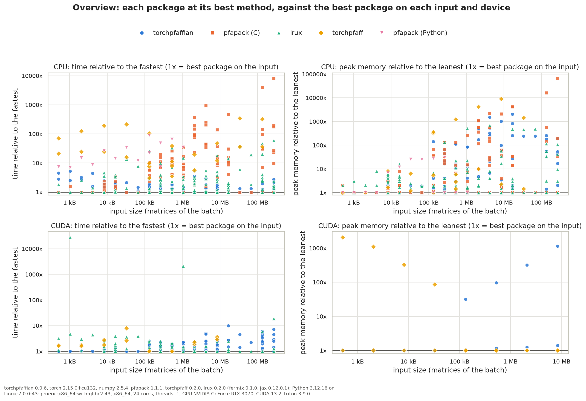

Performance¶
This page compares TorchPfaffian with three other libraries, on CPU and on a GPU:
pfapack, the reference Pfaffian library (NumPy, one matrix at a time, double precision, no gradients or GPU); its C implementation is used;
torchpfaff, a differentiable PyTorch Pfaffian with a Triton kernel on CUDA, for real matrices;
lrux, JAX low-rank updates of determinants and Pfaffians, whose full Pfaffian comes from fermix (JAX/Pallas kernels on GPU, a generic
jax.numpyfallback on CPU), jitted.
Every library computes the signed Pfaffian of the same random skew-symmetric matrices, scaled so that |Pf|
stays near 1, and agrees with pfapack. The times are per matrix: for a batch, the time of the whole batch divided
by its size; pfapack is called on each matrix, the others take the batch in one call. “+ gradient” includes the
backward pass. The fastest library of each row is in bold, and “—” means not measured: torchpfaff has no complex
support and its CUDA kernel is not run above m = 64 (it compiles for minutes), and pfapack has no gradient.
A method whose first call takes more than 10 s is timed from that call, compilation included (torchpfaff on CUDA
at m = 64), and skipped on every larger input (lrux’s complex gradient on CUDA, above m = 8).
Measured with torchpfaffian 0.0.6 (development build), torch 2.15.0+cu132, numpy 2.5.4, pfapack 1.1.1,
torchpfaff 0.2.0, lrux 0.2.0 (fermix 0.1.0, jax 0.12.0.1), Python 3.12.16 on Linux x86_64 (AMD Ryzen 9 3900X),
one CPU thread, and an NVIDIA GeForce RTX 3070 (CUDA 13.2, Triton 3.9.0). Times on another machine differ;
benchmarks/library_comparison.py reproduces the measurement and benchmarks/plot_results.py plots it (see
benchmarks/README.md).
Overview¶
Each library at its best method on each input and device, divided by the fastest library there (1x is the best), against the input size; time on the left, peak memory per call on the right, CPU above and CUDA below. Over all the inputs, full Pfaffians and low-rank ratios, TorchPfaffian is the fastest on 49% of the CPU inputs and 42% of the CUDA ones, at a geometric mean of 1.3x and 1.5x of the fastest; lrux on 37% and 55%, at 1.9x and 1.5x.


Full Pfaffians¶
Pfaffian, float64:
m |
batch |
pfapack (C), CPU |
TorchPfaffian, CPU |
TorchPfaffian, CUDA |
torchpfaff, CPU |
torchpfaff, CUDA |
lrux, CPU |
lrux, CUDA |
|---|---|---|---|---|---|---|---|---|
8 |
1 |
8.1 µs |
22.7 µs |
73.2 µs |
569.3 µs |
128.0 µs |
14.7 µs |
233.3 µs |
8 |
256 |
7.4 µs |
0.9 µs |
1.6 µs |
5.4 µs |
0.7 µs |
0.7 µs |
1.8 µs |
16 |
1 |
9.0 µs |
24.1 µs |
78.0 µs |
1.11 ms |
139.4 µs |
22.9 µs |
230.0 µs |
16 |
256 |
8.2 µs |
2.0 µs |
1.6 µs |
22.9 µs |
1.2 µs |
4.6 µs |
1.7 µs |
32 |
1 |
11.4 µs |
27.9 µs |
83.9 µs |
2.20 ms |
230.7 µs |
52.5 µs |
231.0 µs |
32 |
256 |
10.5 µs |
6.2 µs |
1.9 µs |
122.0 µs |
3.3 µs |
34.0 µs |
1.7 µs |
64 |
1 |
21.3 µs |
45.1 µs |
104.7 µs |
4.56 ms |
832.0 µs |
294.3 µs |
375.8 µs |
64 |
256 |
22.4 µs |
26.0 µs |
5.4 µs |
1.07 ms |
15.5 µs |
406.5 µs |
4.3 µs |
128 |
1 |
101.3 µs |
167.7 µs |
287.7 µs |
10.68 ms |
— |
2.58 ms |
763.5 µs |
128 |
256 |
107.0 µs |
142.0 µs |
19.2 µs |
36.57 ms |
— |
4.11 ms |
13.3 µs |
256 |
1 |
852.0 µs |
866.8 µs |
1.04 ms |
32.93 ms |
— |
28.58 ms |
2.20 ms |
256 |
256 |
875.8 µs |
1.10 ms |
107.2 µs |
285.49 ms |
— |
40.01 ms |
54.1 µs |
Pfaffian, complex128:
m |
batch |
pfapack (C), CPU |
TorchPfaffian, CPU |
TorchPfaffian, CUDA |
lrux, CPU |
lrux, CUDA |
|---|---|---|---|---|---|---|
8 |
1 |
14.9 µs |
23.7 µs |
72.4 µs |
9.5 µs |
344.8 µs |
8 |
256 |
12.5 µs |
1.4 µs |
1.8 µs |
1.3 µs |
3.5 µs |
16 |
1 |
15.8 µs |
24.8 µs |
77.0 µs |
22.3 µs |
338.5 µs |
16 |
256 |
14.9 µs |
3.9 µs |
4.7 µs |
10.7 µs |
3.5 µs |
32 |
1 |
22.4 µs |
36.5 µs |
88.4 µs |
84.3 µs |
346.1 µs |
32 |
256 |
22.0 µs |
13.9 µs |
18.0 µs |
76.8 µs |
3.5 µs |
64 |
1 |
69.5 µs |
101.3 µs |
160.5 µs |
538.3 µs |
631.4 µs |
64 |
256 |
71.4 µs |
91.8 µs |
96.9 µs |
1.07 ms |
9.7 µs |
128 |
1 |
442.2 µs |
595.2 µs |
729.6 µs |
4.33 ms |
1.79 ms |
128 |
256 |
453.4 µs |
592.5 µs |
112.7 µs |
8.70 ms |
51.1 µs |
256 |
1 |
3.42 ms |
4.85 ms |
5.12 ms |
51.44 ms |
10.78 s |
256 |
256 |
3.47 ms |
5.43 ms |
742.4 µs |
— |
— |
Pfaffian + gradient, float64:
m |
batch |
TorchPfaffian, CPU |
TorchPfaffian, CUDA |
torchpfaff, CPU |
torchpfaff, CUDA |
lrux, CPU |
lrux, CUDA |
|---|---|---|---|---|---|---|---|
8 |
1 |
152.8 µs |
304.9 µs |
718.0 µs |
497.4 µs |
33.9 µs |
341.0 µs |
8 |
256 |
3.0 µs |
4.7 µs |
6.9 µs |
1.9 µs |
2.2 µs |
2.8 µs |
16 |
1 |
165.3 µs |
316.7 µs |
1.27 ms |
509.7 µs |
52.0 µs |
331.4 µs |
16 |
256 |
7.7 µs |
5.0 µs |
26.9 µs |
2.6 µs |
10.5 µs |
2.9 µs |
32 |
1 |
180.2 µs |
342.4 µs |
2.37 ms |
586.7 µs |
97.5 µs |
331.7 µs |
32 |
256 |
28.4 µs |
6.4 µs |
160.9 µs |
6.4 µs |
64.1 µs |
2.8 µs |
64 |
1 |
300.1 µs |
465.6 µs |
4.79 ms |
1.23 ms |
404.4 µs |
592.0 µs |
64 |
256 |
146.4 µs |
21.4 µs |
1.75 ms |
26.5 µs |
741.5 µs |
9.0 µs |
128 |
1 |
1.14 ms |
1.25 ms |
11.19 ms |
— |
3.25 ms |
1.26 ms |
128 |
256 |
1.03 ms |
156.7 µs |
37.67 ms |
— |
6.23 ms |
34.9 µs |
256 |
1 |
4.56 ms |
3.02 ms |
36.02 ms |
— |
31.66 ms |
3.41 ms |
256 |
256 |
7.98 ms |
795.8 µs |
289.95 ms |
— |
31.75 ms |
168.1 µs |
Pfaffian + gradient, complex128:
m |
batch |
TorchPfaffian, CPU |
TorchPfaffian, CUDA |
lrux, CPU |
lrux, CUDA |
|---|---|---|---|---|---|
8 |
1 |
198.4 µs |
367.5 µs |
37.7 µs |
10.30 s |
8 |
256 |
6.5 µs |
5.5 µs |
4.1 µs |
— |
16 |
1 |
214.0 µs |
387.5 µs |
48.0 µs |
— |
16 |
256 |
25.6 µs |
8.9 µs |
23.2 µs |
— |
32 |
1 |
314.6 µs |
479.0 µs |
162.0 µs |
— |
32 |
256 |
138.2 µs |
28.0 µs |
161.9 µs |
— |
64 |
1 |
1.05 ms |
1.26 ms |
955.2 µs |
— |
64 |
256 |
933.9 µs |
137.6 µs |
1.63 ms |
— |
128 |
1 |
2.78 ms |
2.44 ms |
7.04 ms |
— |
128 |
256 |
6.53 ms |
456.1 µs |
11.96 ms |
— |
256 |
1 |
18.87 ms |
9.69 ms |
64.48 ms |
— |
256 |
256 |
26.09 ms |
2.64 ms |
61.06 ms |
— |
Pfaffian ratios under low-rank updates¶
benchmarks/library_comparison.py --ratios times LowRankPfaffian and
PfaffianUpdater against lrux’s pf_lru and pf_lru_delayed, and against
computing the Pfaffian of the updated matrix with pfapack, in float64 (times per update). “rank 2” is one dense
update A - u J u^T, “row” one row and column replaced, and “row x16” sixteen successive accepted row
replacements, with immediate or delayed (T = 4) inverse updates. “ratio + inverse” also updates the inverse,
which the next move needs.
rank 2, ratio:
n |
batch |
pfapack (C), new Pfaffian |
TorchPfaffian, CPU |
TorchPfaffian, CUDA |
lrux, CPU |
lrux, CUDA |
|---|---|---|---|---|---|---|
32 |
1 |
11.7 µs |
17.3 µs |
124.1 µs |
10.2 µs |
160.0 µs |
32 |
64 |
11.3 µs |
0.8 µs |
2.0 µs |
0.9 µs |
2.6 µs |
128 |
1 |
99.7 µs |
20.1 µs |
128.1 µs |
16.9 µs |
157.0 µs |
128 |
64 |
104.0 µs |
2.8 µs |
5.0 µs |
7.7 µs |
2.9 µs |
512 |
1 |
9.67 ms |
48.4 µs |
133.2 µs |
53.0 µs |
191.6 µs |
512 |
64 |
9.95 ms |
81.3 µs |
60.3 µs |
68.8 µs |
10.1 µs |
rank 2, ratio + inverse:
n |
batch |
pfapack (C), new Pfaffian |
TorchPfaffian, CPU |
TorchPfaffian, CUDA |
lrux, CPU |
lrux, CUDA |
|---|---|---|---|---|---|---|
32 |
1 |
11.7 µs |
20.9 µs |
235.1 µs |
11.8 µs |
156.5 µs |
32 |
64 |
11.3 µs |
1.4 µs |
3.7 µs |
1.3 µs |
2.4 µs |
128 |
1 |
99.7 µs |
29.6 µs |
236.4 µs |
36.1 µs |
152.4 µs |
128 |
64 |
104.0 µs |
12.6 µs |
8.4 µs |
13.6 µs |
5.0 µs |
512 |
1 |
9.67 ms |
125.7 µs |
321.6 µs |
372.7 µs |
221.6 µs |
512 |
64 |
9.95 ms |
326.6 µs |
107.1 µs |
771.1 µs |
41.9 µs |
row, ratio:
n |
batch |
pfapack (C), new Pfaffian |
TorchPfaffian, CPU |
TorchPfaffian, CUDA |
lrux, CPU |
lrux, CUDA |
|---|---|---|---|---|---|---|
32 |
1 |
24.8 µs |
22.6 µs |
110.3 µs |
10.6 µs |
159.3 µs |
32 |
64 |
11.4 µs |
0.6 µs |
1.8 µs |
0.4 µs |
2.4 µs |
128 |
1 |
115.9 µs |
22.8 µs |
110.5 µs |
12.3 µs |
173.9 µs |
128 |
64 |
109.9 µs |
0.8 µs |
1.7 µs |
1.8 µs |
2.8 µs |
512 |
1 |
9.66 ms |
34.3 µs |
112.3 µs |
45.7 µs |
174.8 µs |
512 |
64 |
10.42 ms |
2.7 µs |
1.8 µs |
53.0 µs |
7.7 µs |
row, ratio + inverse:
n |
batch |
pfapack (C), new Pfaffian |
TorchPfaffian, CPU |
TorchPfaffian, CUDA |
lrux, CPU |
lrux, CUDA |
|---|---|---|---|---|---|---|
32 |
1 |
24.8 µs |
26.6 µs |
285.5 µs |
13.2 µs |
158.8 µs |
32 |
64 |
11.4 µs |
1.2 µs |
4.5 µs |
0.9 µs |
2.3 µs |
128 |
1 |
115.9 µs |
34.7 µs |
283.2 µs |
46.9 µs |
160.4 µs |
128 |
64 |
109.9 µs |
10.8 µs |
7.0 µs |
6.4 µs |
4.8 µs |
512 |
1 |
9.66 ms |
109.9 µs |
301.7 µs |
212.1 µs |
192.8 µs |
512 |
64 |
10.42 ms |
294.0 µs |
49.6 µs |
776.9 µs |
39.7 µs |
row x16, immediate updates:
n |
batch |
pfapack (C), new Pfaffian |
TorchPfaffian, CPU |
TorchPfaffian, CUDA |
lrux, CPU |
lrux, CUDA |
|---|---|---|---|---|---|---|
32 |
1 |
21.8 µs |
29.0 µs |
273.8 µs |
19.6 µs |
117.6 µs |
32 |
64 |
11.3 µs |
1.3 µs |
4.2 µs |
1.2 µs |
1.9 µs |
128 |
1 |
113.3 µs |
35.6 µs |
271.7 µs |
47.2 µs |
110.5 µs |
128 |
64 |
105.9 µs |
11.3 µs |
4.4 µs |
13.6 µs |
2.9 µs |
512 |
1 |
9.96 ms |
116.0 µs |
273.8 µs |
278.3 µs |
119.8 µs |
512 |
64 |
9.91 ms |
304.5 µs |
47.9 µs |
787.5 µs |
35.5 µs |
row x16, delayed updates (T=4):
n |
batch |
pfapack (C), new Pfaffian |
TorchPfaffian, CPU |
TorchPfaffian, CUDA |
lrux, CPU |
lrux, CUDA |
|---|---|---|---|---|---|---|
32 |
1 |
21.8 µs |
24.8 µs |
443.7 µs |
77.8 µs |
197.3 µs |
32 |
64 |
11.3 µs |
1.1 µs |
7.1 µs |
2.6 µs |
3.1 µs |
128 |
1 |
113.3 µs |
30.4 µs |
446.5 µs |
97.7 µs |
190.9 µs |
128 |
64 |
105.9 µs |
7.5 µs |
8.5 µs |
28.5 µs |
3.1 µs |
512 |
1 |
9.96 ms |
103.1 µs |
458.3 µs |
341.8 µs |
193.4 µs |
512 |
64 |
9.91 ms |
249.8 µs |
82.7 µs |
766.8 µs |
24.2 µs |
Reading the results¶
On a single matrix on CPU, pfapack is the fastest: TorchPfaffian has a fixed cost of about 13 µs per call (checks, dispatch), and its Rust kernel is up to about 1.7x slower than pfapack’s on one large matrix.
On a batch of small matrices, TorchPfaffian is faster than pfapack even on one thread, since one call amortizes the fixed cost: the typical workload of matchgate simulation.
On CUDA, small inputs are computed by the Rust kernel on the host, and larger real ones by one blocked Triton kernel per batch. TorchPfaffian is the fastest on every single matrix (73 µs at
m = 8, against 128 µs for torchpfaff and 233 µs for lrux) and on complex batches fromm = 128. lrux is the fastest on the other batches, where fermix’s kernels use the GPU best (this GeForce card has slow float64 arithmetic); on float64 batches fromm = 64TorchPfaffian is 1.3 to 2x slower.The gradient costs a few times the forward pass. It is the main reason to use TorchPfaffian or torchpfaff: pfapack has none.
For low-rank updates on CPU, TorchPfaffian is faster than lrux from
n = 128on most moves, single and batched, and on every chain of moves with delayed updates; it is 1.1 to 2.1x slower atn = 32, and on single ratios and batched row replacements with the inverse atn = 128. On CUDA, lrux is faster on most inputs, TorchPfaffian on most batched ratios without the inverse.